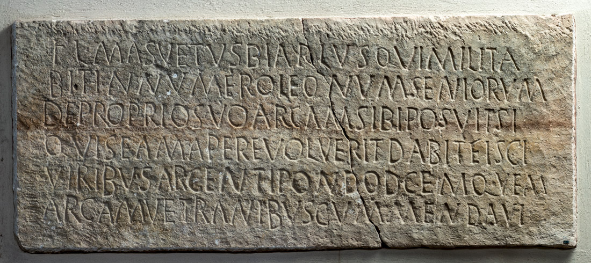

The Inscription of Mansuetus
PHYSICAL DESCRIPTION
- Type
- Front panel of the sarcophagus.
- Material(s)
- Limestone.
- Execution
- Inscribed.
- Dimensions
- 53 × 128 cm
- Epigraphic Field
- 53 × 128 cm
- Letters Height
- 5-6.5 cm
Palaeographic comment
Dextrorse direction, horizontal alignment, vertical module, irregular ductus, left-aligned text.
F with the upper arm ascending to the right and an anomalous third arm on the baseline.
L with the stem and the horizontal stroke meeting above the baseline, forming an obtuse angle.

INSCRIPTION
INTERPRETATIVE TRANSCRIPTION
Fl(avius) Ma<n>suetus
biar⸢c⸣us (!), qui milita
=
bit (!) in numero leonum seniorum,
de proprio suo arcam sibi posuit. Si
quis eam aperire voluerit, dabit fisci
viribus argenti pondo d<e>cem; qu⸢a⸣m
arcam vet<e>ranibus c⸢o⸣mmendavi<t>.
TRANSLATION
Flavius Mansuetus, biarchus who served in the numerus of the Leones seniores, set up this arca at his own expense.
Should anyone wish to open it, he shall pay ten pounds of silver to the fiscus; (he) entrusted this arca to the veterans.
PEOPLE
Flavius Mansuetus
- NOMEN
- Flavius
- COGNOMEN
- Mansuetus
- GENS
- Flavia
- ORIGIN (of the name Mansuetus)
- latin
- GENDER
- male
- OCCUPATION
- soldier
- RANK
- biarchus
- NUMERUS
- Leones Seniores
- ROLE
- dedicator/deceased
Bibliography
| Bertolini 1874a, 27, n. 19. |
| Bertolini 1874b, 285, n. 7. |
| Bertolini 1875b, 117, n. 10. |
| CIL V 8755 |
| ILCV 515 |
| Hoffmann 1963, 46, n. 31. |
| Lettich 1983, 90-91, n. 51. |
- EDR
-
EDR097903
- Author of the record:
- Damiana Baldassarra
- Date:
- 26-11-2007
COMMENTARY
Flavius Mansuetus was a biarchus of the Leones seniores. The biarchus represented one of the lowest positions among the junior officer ranks, whose function remains almost entirely unknown. According to Grosse, the biarchus would have been a non-commissioned officer in charge of provisions, corresponding to the ancient frumentarius, perhaps based on the etymological origin of the name from βίος + ἀρχός or βία + ἀρχός (Grosse 1920, 114-115). Speidel argues instead that the term biarchus derived etymologically from exarchus, a rank attested in the 3rd century AD, and performed the same functions; in fact, the rank of exarchus could be granted twice to the same soldier as a reward, earning him the title of bis exarchus, which in the 4th century became biarchus (Speidel 2005, 206).
The auxilium palatinum of the Leones seniores is recorded as being stationed in Gaul (ND occ. 5, 171; 7, 65).
According to the site plan, the sarcophagus of Mansuetus is contiguous with that of Flavius Marcaridus, tribunus of the Iovii iuniores. The reason why the burials of members of two different numeri were placed side-by-side remains unclear, as it is a unique case within the necropolis; perhaps this proximity is not due to human activity, but to a shift caused by the flooding of the Lemene river.
Mansuetus entrusted the protection of his burial to the veterans. As noted by Lettich, this declaration is one of many clues suggesting a permanent garrison of troops in Concordia (Lettich 1983, 91).